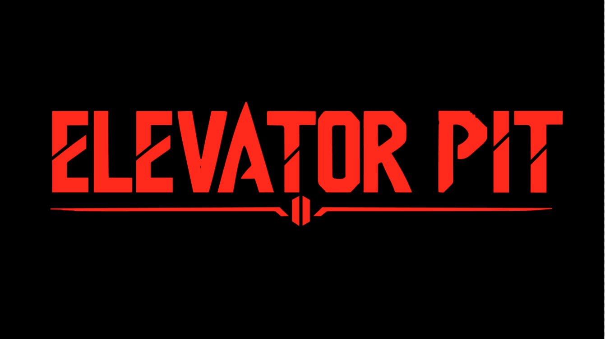
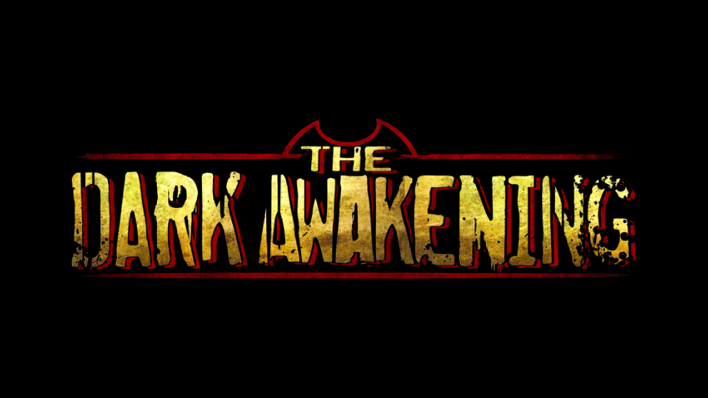

> 3D modeler / junior programmer
I am a 3D modeler with over two years of experience creating digital assets, environments, and characters. I have recently expanded my skill set into technical development, diving into game programming using the Godot engine. My approach combines the visual creativity of 3D art with the logic of software development to create unique interactive experiences.
Director and indie game developer at the studio, coordinating the 3D visual design workflow and the integration of interactive mechanics.
Graduate of the SMX program as a generalist technician.

Elevator Pit is a survival roguelite FPS featuring a "boomer shooter" aesthetic. You control RCG.1, a government robot sent to a deadly underground facility during a global apocalypse. Explore procedurally generated floors, gather essential resources, and hack terminals to unlock the elevator as you seek a global cure.

A Bendy fangame developed by AitorGames! that aims to completely reimagine BATIM; my work focuses on 3D modeling.